| 문서 버전 | 1.0 |
|---|---|
| 발행일 | 2026-10-15 |
| 대상 | 일반 사용자(작업자), 관리자 |
| 접속 주소 | https://microneedle-ipc.web.app |
이 매뉴얼의 화면은 시험 환경에서 예시 데이터로 캡처했습니다. 배치번호·중량·사용자 이름은 실제 생산 기록이 아닙니다. 추천값은 공정 보조용 계산 결과이며, 최종 판단과 공식 기록은 작업자와 공식 기록서를 기준으로 합니다.
마이크로니들 IPC는 토출기 5대(약액부 D1~D3, 기저부 B1~B2)의 IPC 중량을 기록하고, 기록이 쌓일 때마다 다음에 쓸 Pulse(약액부) 또는 Speed(기저부)를 추천하는 웹 앱입니다. PC와 휴대폰 브라우저에서 같은 주소로 접속하며, 모든 기록은 서버에 저장되어 접속한 모든 화면에 실시간으로 반영됩니다.
| 권한 | 할 수 있는 일 |
|---|---|
| 일반 사용자작업자 | 배치 시작·불러오기·정보 수정·완료·다시 열기, IPC 저장, 테스트 모드 사용, 정정 요청, 결과 조회, 엑셀·보고서 출력 |
| 관리자관리자 | 작업자 기능 전부 + 사용자 승인·권한·잠금 해제·비밀번호 초기화, 레시피 관리, 정정 승인·반려·바로 정정, 이상치 제외, 테스트 기록 편입, 과거 데이터 가져오기, 전체 Audit trail 조회, 자동 로그아웃 설정 |
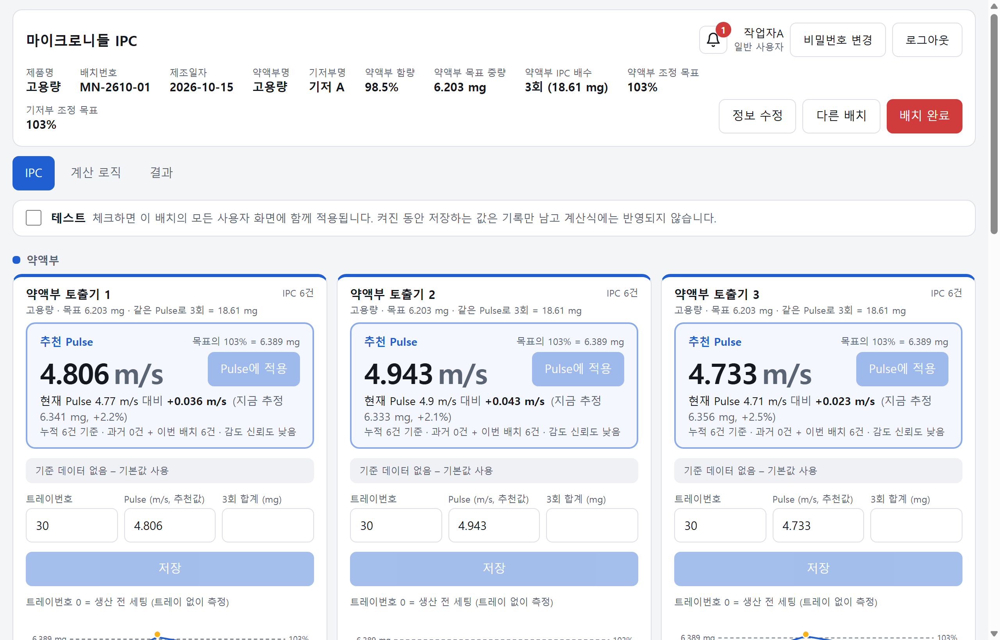
| 영역 | 내용 |
|---|---|
| 머리글 | 알림 종, 로그인한 사람과 권한, 비밀번호 변경, 로그아웃 |
| 배치 정보 | 제품명, 배치번호, 제조일자, 약액부·기저부명, 함량, 목표 중량, IPC 배수, 조정 목표와 정보 수정·다른 배치·배치 완료 버튼 |
| 탭 | IPC(입력) · 계산 로직(추천 방식 설명) · 결과(배치별 기록, 엑셀, 보고서) · 관리자(관리자만) |
| 토출기 카드 | 추천값, 입력란, 판정 미리보기, 추이 그래프, 최근 기록 |
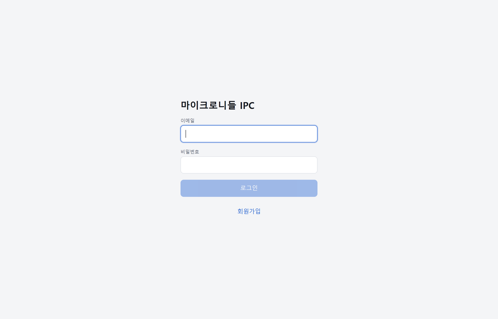
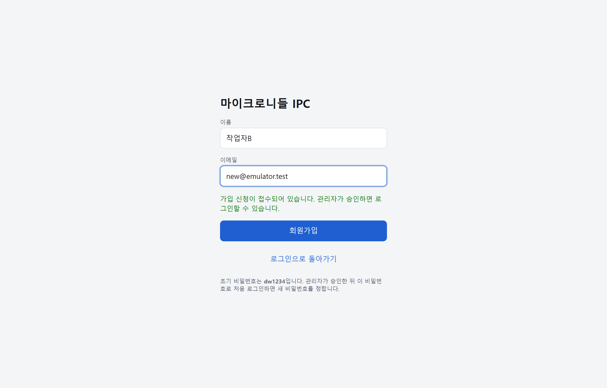
초기 비밀번호(dw1234)로 로그인하면 아래 화면만 나옵니다. 지금 비밀번호에 dw1234, 새 비밀번호(6자 이상)를 두 번 입력하면 바로 IPC 화면으로 들어갑니다. 평소에는 머리글의 비밀번호 변경으로 언제든 바꿀 수 있습니다.
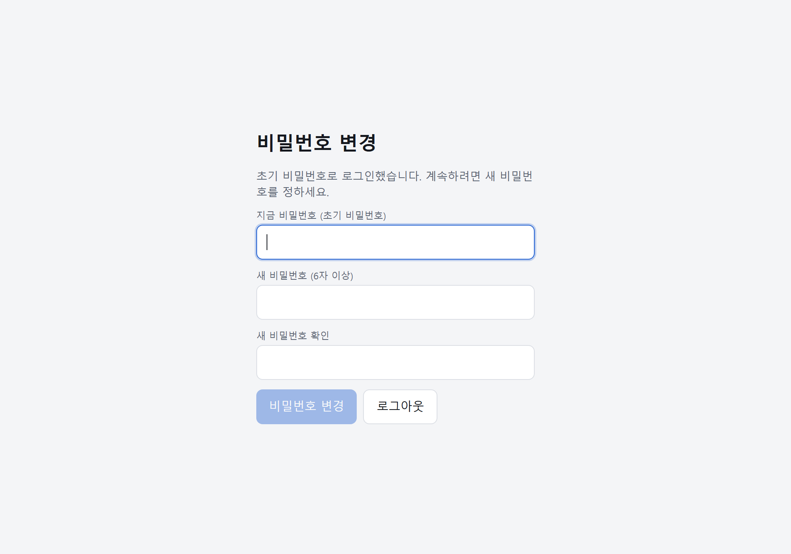
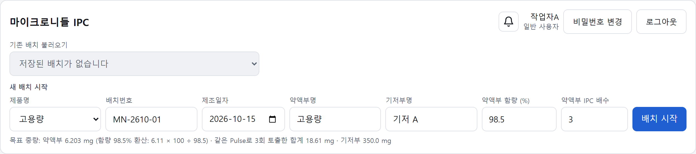
| 항목 | 설명 |
|---|---|
| 약액부 함량(%) | 목표 중량 = 레시피 기준 중량(함량 100%) × 100 ÷ 함량. 예: 기준 6.11 mg, 함량 98.5% → 6.203 mg. 50~150% 사이만 입력됩니다. 기저부 목표는 함량과 무관합니다. |
| 약액부 IPC 배수 | 같은 Pulse로 몇 번 토출해 합산 중량을 잴지(예: 3회). 판정과 계산은 합계 ÷ 횟수인 1회분으로 합니다. |
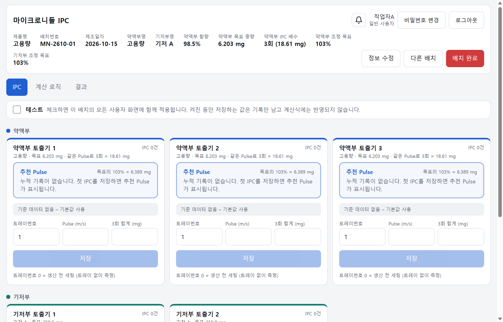
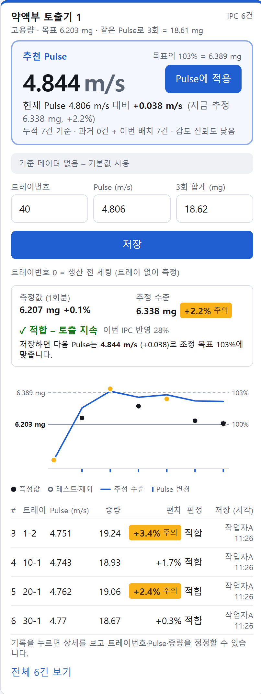
| 표시 | 뜻 (목표 대비 편차) |
|---|---|
| 표시 없음 | ±2% 이내 |
| 주의(노랑) | 2% 초과 ~ 5% |
| 경고(빨강) | 5% 초과 ~ 10% |
| 이탈(보라) | 10% 초과 |
적합 기준(기본 ±5%)과 경고 구간은 레시피에서 정합니다. "재측정 권장"이 뜨면 예상 범위를 크게 벗어난 값이므로 다시 재 보고 저장하세요.
기기 점검이나 시험 토출처럼 기록은 남기되 추천 계산에는 넣지 않을 값은 테스트 모드에서 저장합니다.
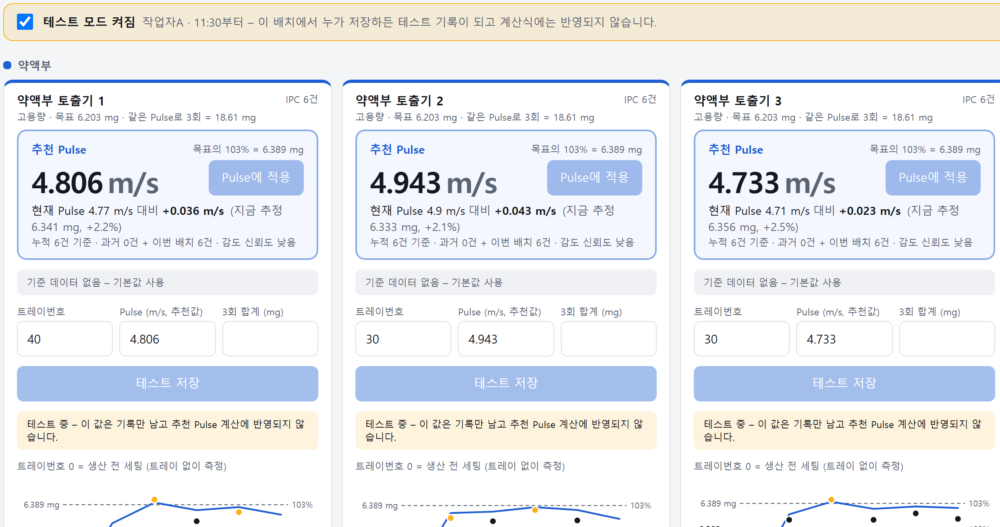
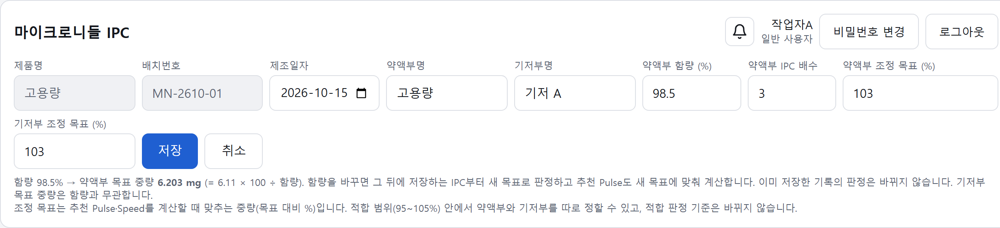
| 항목 | 바꾸면 |
|---|---|
| 약액부 함량 | 목표 중량이 다시 환산되고, 이후 저장하는 IPC부터 새 목표로 판정·추천합니다. 이미 저장한 기록의 판정은 그대로입니다. |
| 약액부 IPC 배수 | 이후 기록부터 새 횟수로 1회분을 계산합니다. 이전 기록은 저장 당시 횟수 그대로이며, 3회 합산 기록을 1회 기록보다 더 신뢰해 계산합니다. |
| 조정 목표(약액부·기저부) | 추천값이 맞추는 비율(%)입니다. 적합 범위(기본 95~105%) 안에서만 정할 수 있고, 적합 판정 기준은 바뀌지 않습니다. |
모든 변경은 Audit trail에 "배치 정보 변경"으로 남습니다.
카드 아래 기록 표의 줄(또는 결과 탭의 기록)을 누르면 상세 화면이 열립니다.
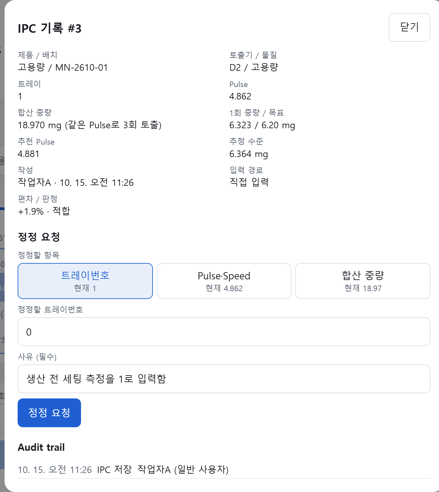
기록은 삭제할 수 없습니다. 잘못 넣은 값은 정정으로, 쓰지 않을 값은 관리자의 "계산에서 제외"로 처리합니다.
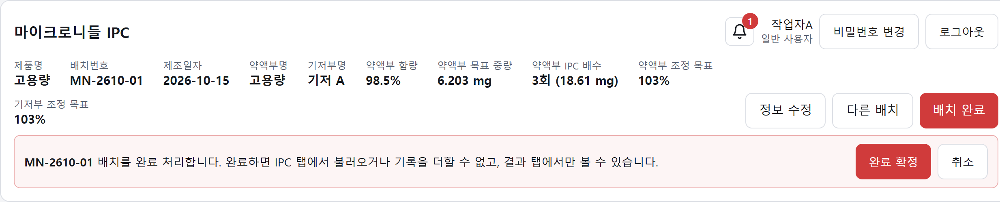
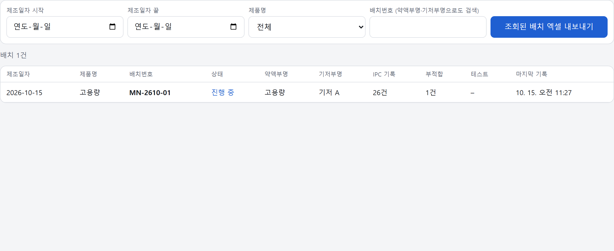
배치를 누르면 배치 정보, 토출기별 요약(IPC 횟수, 적합·부적합, 평균 중량, Pulse·Speed 변화)과 그래프, 전체 기록이 나옵니다.
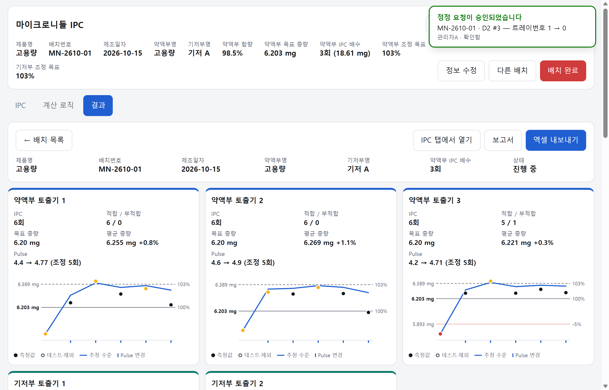
보고서를 누르면 A4 보고서 화면이 열리고, 인쇄 · PDF 저장으로 인쇄하거나 PDF로 저장합니다(출력은 Audit trail에 남음).
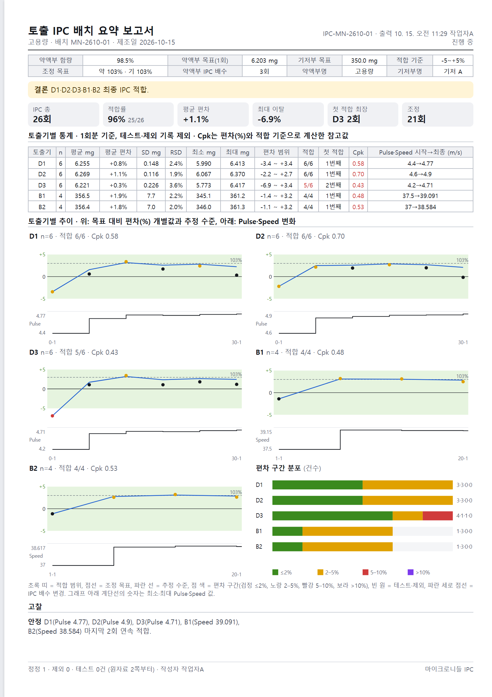
| 구역 | 내용 |
|---|---|
| 결론·지표 | 토출기별 최종 판정, IPC 총·적합률·평균 편차·최대 이탈·첫 적합까지 가장 오래 걸린 토출기·조정 횟수 |
| 토출기별 통계 | n, 평균, SD, RSD, 최소·최대, 편차 범위, 적합, 첫 적합, Cpk(참고), Pulse·Speed 시작→최종 |
| 추이 도표 | 토출기 5대를 같은 크기로: 편차 개별값과 추정 수준, 적합 띠, 조정 목표선, 아래쪽 Pulse·Speed 계단선, IPC 배수 변경 표시 |
| 편차 구간 분포 | ≤2% / 2–5% / 5–10% / >10% 건수 |
| 고찰 | 반복성, 조정 반응, 추천 이탈, 운영 변경, 안정 중 해당하는 것을 근거 수치와 함께 최대 4개 |
| 2쪽부터 | 전체 원자료 표(테스트·제외 기록 회색), 정정 이력, 테스트·제외 기록과 사유 |
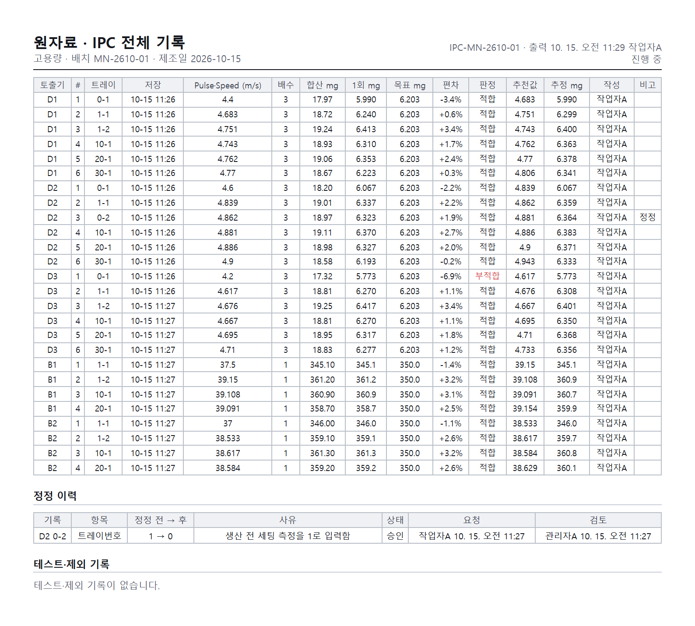
추천값을 어떻게 계산하는지와 토출기별 현재 추정값(사전값 기준, 감도, 흔들림, 다음 반영 비율)을 보여 줍니다.
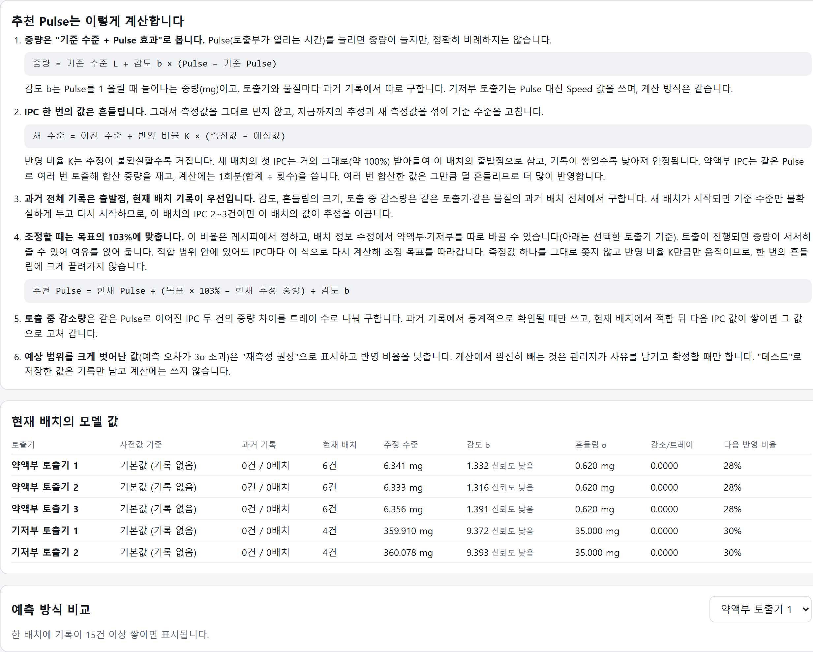
관리자 탭에는 레시피, 데이터 가져오기, 정정·이상치 검토, Audit trail, 사용자, 설정이 있습니다. 중요한 변경은 저장 전에 비밀번호를 한 번 더 확인합니다.
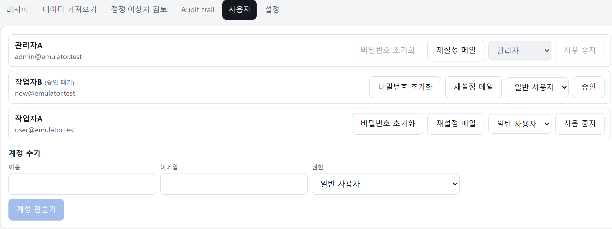
| 기능 | 설명 |
|---|---|
| 승인 | 가입 신청자의 승인을 누르면 사용할 수 있습니다. 승인 후 사용자는 dw1234로 첫 로그인해 비밀번호를 바꿉니다. |
| 권한 | 일반 사용자 ↔ 관리자 전환. 본인 계정의 관리자 권한은 스스로 해제할 수 없습니다. |
| 사용 중지 / 다시 사용 | 퇴사·전배 등으로 접속을 막을 때 사용합니다. 기록은 그대로 남습니다. |
| 잠금 해제 | 5회 실패로 잠긴 계정을 풉니다. |
| 비밀번호 초기화 | 비밀번호를 dw1234로 되돌리고 다음 로그인 때 변경하게 합니다. 사용자가 옆에 있을 때 하고 바로 바꾸게 하세요. |
| 재설정 메일 | 사용자 이메일로 비밀번호 재설정 링크를 보냅니다. |
| 계정 추가 | 이름·이메일·권한으로 바로 계정을 만듭니다(초기 비밀번호 dw1234, 첫 로그인 때 변경). |
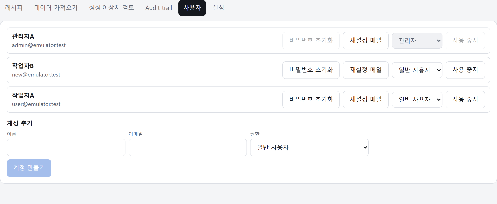
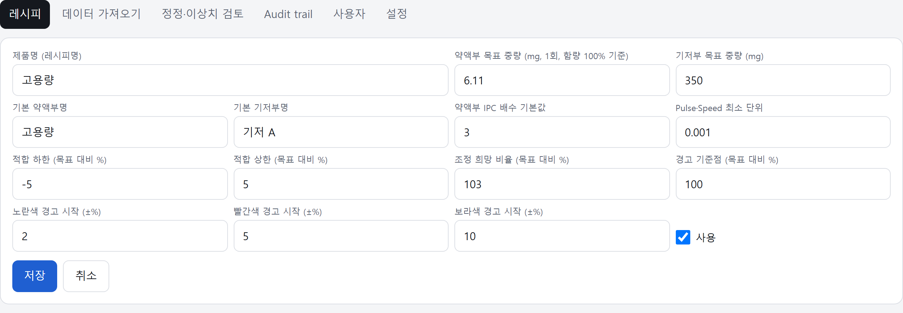
제품(레시피)별로 아래 값을 정합니다. 레시피를 바꾸면 이후 시작하는 배치부터 적용됩니다.
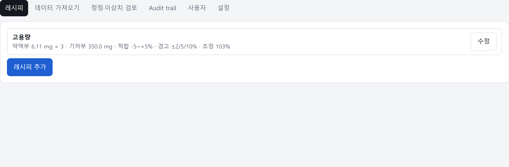
작업자가 정정을 요청하면 관리자 화면 오른쪽 위에 알림이 뜨고, 종 아이콘과 관리자 탭에 대기 건수가 표시됩니다.
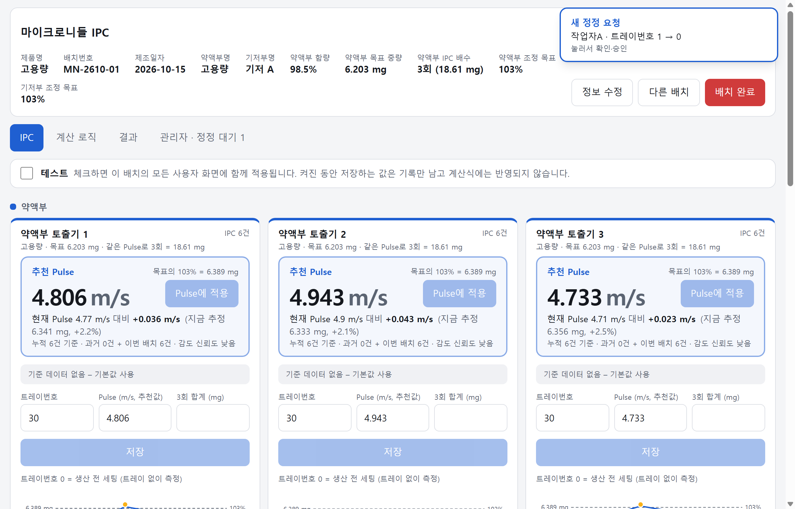
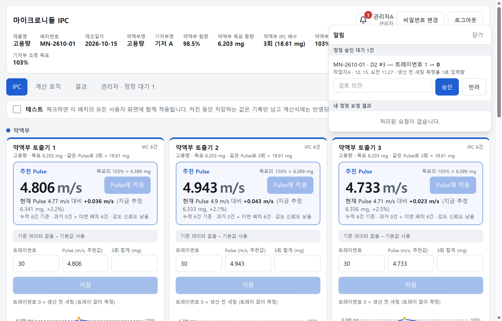
승인할 수 있는 곳은 세 군데입니다. 어디서 처리하든 결과는 같고 Audit trail에 남습니다.
바로 정정(관리자): 기록 상세에서 관리자는 요청과 승인을 한 번에 처리할 수 있습니다. 트레이번호 0 이상, Pulse·중량은 0보다 커야 합니다.
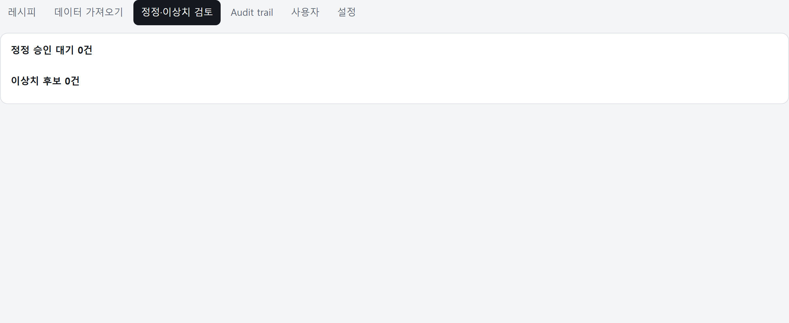
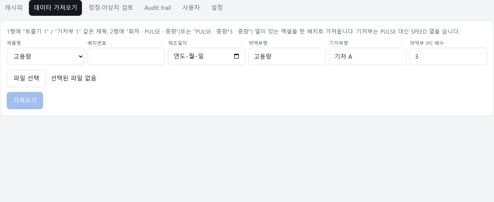
과거 토출 기록 엑셀(토출기별 열: 회차·PULSE·중량)을 배치로 가져와 추천 계산의 과거 기준으로 씁니다. 시트를 고르고 미리보기를 확인한 뒤 가져옵니다.
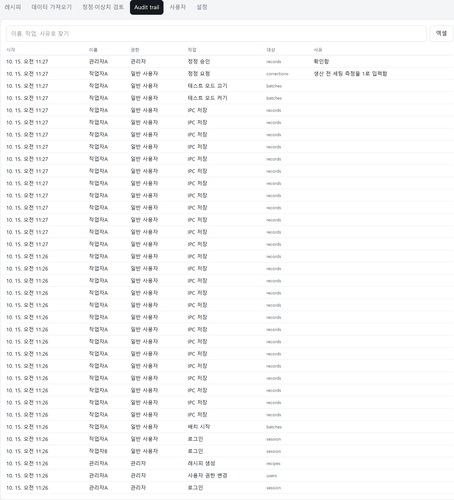
로그인·로그아웃, IPC 저장, 배치 시작·변경·완료, 테스트 모드, 정정, 제외, 사용자·레시피·설정 변경, 엑셀·보고서 출력을 시각·사람·권한과 함께 기록합니다. 관리자는 전체를, 작업자는 본인 기록만 봅니다. 기록은 수정·삭제할 수 없습니다.
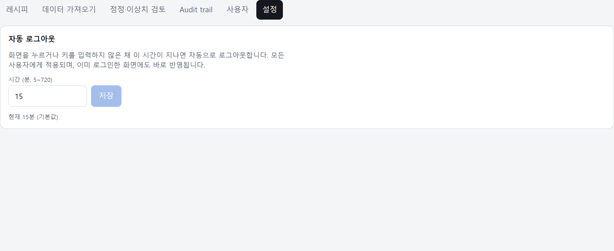
5~720분 사이 정수로 정합니다. 저장하면 이미 로그인한 모든 화면에도 바로 적용됩니다. 서버에 아직 올라가지 않은 저장이 있는 동안은 자동 로그아웃을 미룹니다.
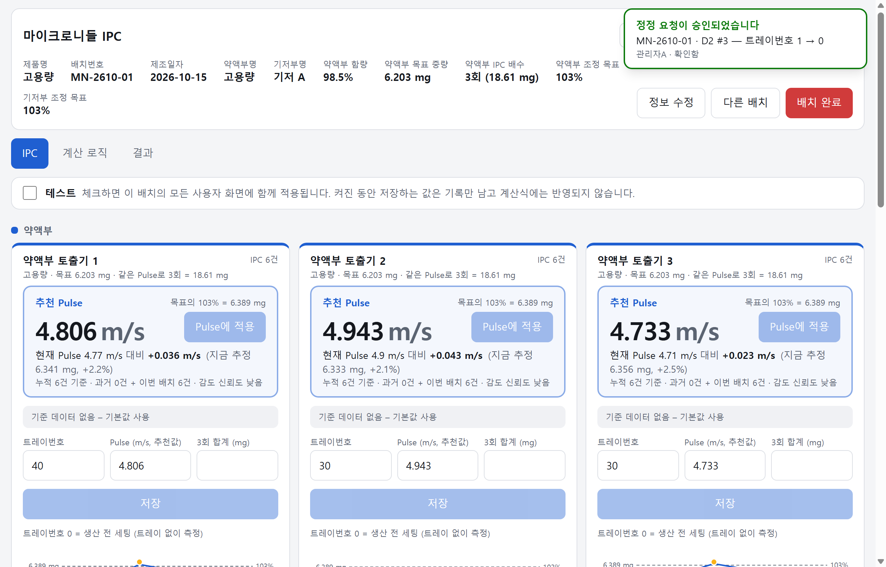
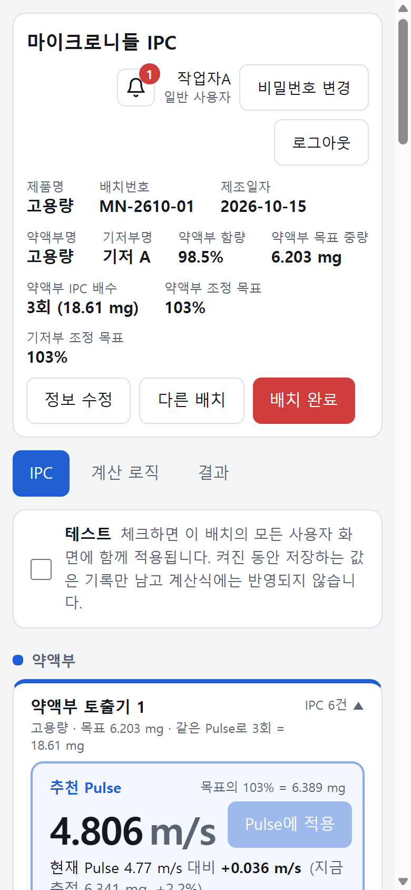
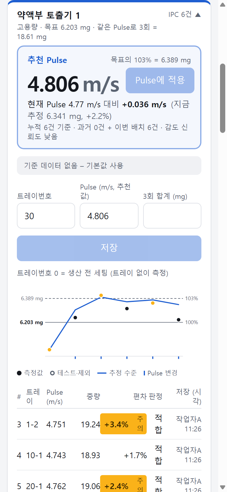
휴대폰에서도 같은 주소로 같은 기능을 씁니다. 토출기 카드는 제목을 눌러 접고 펼 수 있고, 접어도 추천값은 항상 보입니다.
| 상황 | 해결 |
|---|---|
| 저장 버튼이 눌리지 않음 | 트레이번호·Pulse·중량 세 칸이 모두 숫자로 채워졌는지 확인하세요. 배치가 완료 상태면 저장할 수 없습니다. |
| "트레이번호가 직전 기록보다 작습니다" | 참고 문구이며 저장은 됩니다. 트레이 0(세팅)과 테스트·제외 기록은 비교하지 않습니다. |
| 같은 트레이를 여러 번 측정 | 트레이번호에 같은 숫자만 넣으면 1-1, 1-2처럼 자동으로 구분됩니다. 1-1, 1.1처럼 직접 쓰지 마세요. |
| 테스트로 저장해야 했는데 일반으로 저장함 | 관리자에게 "계산에서 제외"를 요청하세요(사유: 테스트 측정 – 체크 누락). |
| 추천값이 이상하게 크게 바뀜 | 입력한 Pulse가 장비 값과 같은지, 3회 합계 칸에 1회 값을 넣지 않았는지 확인하세요. 같은 Pulse로 두 번 재서 흔들림을 확인하고, 흔들림이 크면 IPC 배수를 3회로 늘리세요. 판단이 어려우면 결과 탭 보고서의 고찰을 참고하세요. |
| 함량을 잘못 입력함 | 정보 수정에서 바로 고치세요. 이미 저장한 기록의 판정은 저장 당시 목표로 남습니다. |
| 계정이 잠김 | 일반 사용자는 관리자에게 잠금 해제를, 관리자는 이메일로 받은 재설정 링크를 이용하세요. |
| 비밀번호를 잊음 | 관리자에게 비밀번호 초기화(dw1234) 또는 재설정 메일 발송을 요청하세요. |
| 자꾸 로그아웃됨 | 자동 로그아웃 시간이 지났기 때문입니다. 관리자가 설정에서 늘릴 수 있습니다. |
| 보고서 인쇄 시 색이 안 나옴 | 인쇄 창에서 "배경 그래픽"을 켜세요. 쪽 번호는 최신 Chrome·Edge에서 표시됩니다. |
| 용어 | 뜻 |
|---|---|
| Pulse / Speed | 약액부 토출기는 Pulse, 기저부 토출기는 Speed로 토출량을 조절합니다. 단위 m/s. |
| IPC 배수 | 한 번의 IPC에서 같은 값으로 토출해 합산하는 횟수(약액부만). 계산은 1회분으로 합니다. |
| 목표 중량 | 1회분 기준 목표. 약액부는 함량으로 환산합니다. |
| 조정 목표 | 추천값이 맞추는 비율(기본 103%). 토출 중 감소 가능성에 대비한 여유입니다. |
| 추정 수준 | 지금까지의 IPC를 종합해 추정한 현재 1회분 중량(그래프의 파란 선). |
| 감도 | Pulse·Speed를 1 바꿀 때 변하는 중량(mg). |
| 반영 비율 | 새 IPC 한 건을 추정에 얼마나 반영했는지(%). 첫 IPC는 거의 100%, 기록이 쌓일수록 작아집니다. |
| RSD · Cpk | RSD = 표준편차 ÷ 평균 × 100(흔들림). Cpk = 적합 기준 대비 공정능력 지수(보고서 참고값). |
| 테스트 기록 · 제외 기록 | 기록은 남지만 추천 계산에는 쓰지 않는 기록. |
| 버전 | 일자 | 내용 |
|---|---|---|
| 1.0 | 2026-10-15 | 최초 제정 |